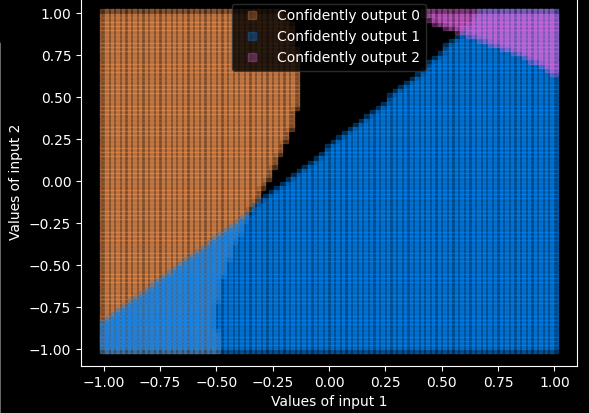
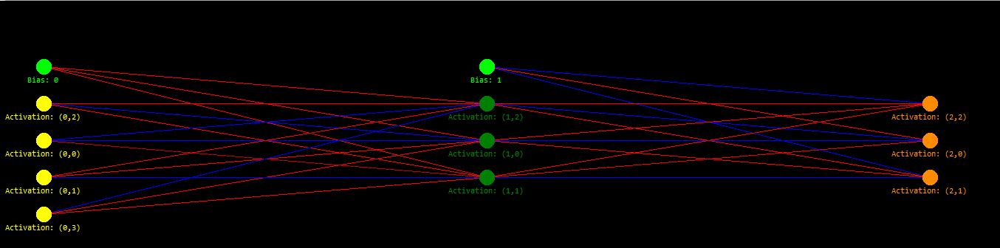

N-Layer Numpy Neural Net (NN v2)
I came back to the "create a neural network from scratch project" in Feburary 2021, to do it justice and use
actual backpropagation. I was probably thus inspired by 3b1b's course, which I then used
as a basis for the backpropagation algorithm.
Alongside being a trainiable neural network, with a customisable architecture, I also wrote some visualisations for the network including:
• A (value x cost) graph for any specified weight:

• An output/prediction map for various values of 2 inputs (any other inputs are kept constant):

• A visual representation of the neural network architecture with all it's weights and biases, which can be shown as the network trains:

Click the code below to download the python file:

<
Contents:
Click to jump to chapter: